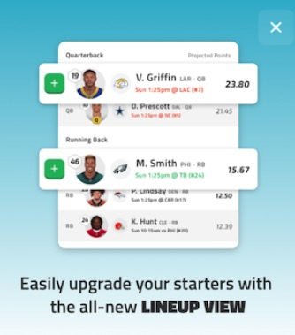
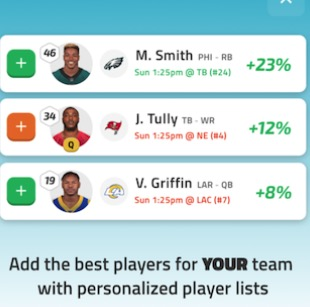
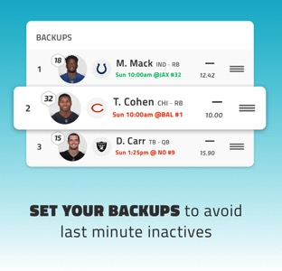
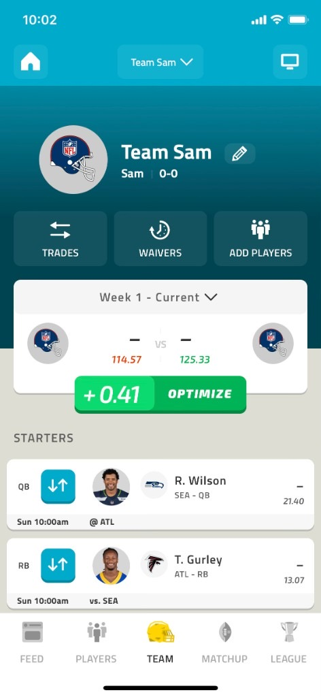
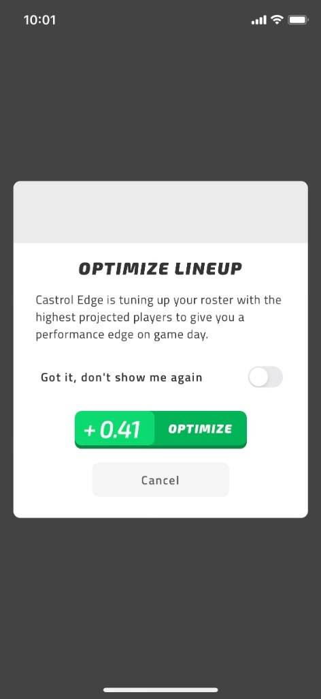
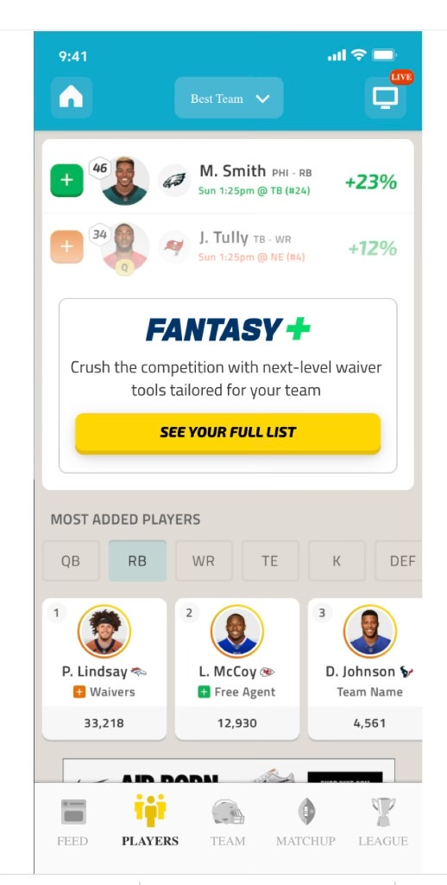

Direct-to-consumer revenue in the first week: $600K
Direct-to-consumer revenue by season end: $920K
Active Fantasy users who bought the Tools Package: 1.4M (45%)
Fantasy+ tools in product






Executive summary
Prove the NFL could monetize the Fantasy user base directly—without disrupting core free gameplay—by identifying tools season-long players would pay for, then shipping a mid-season Tools Package with a five-person product team.
Situation
The Fantasy app had always been a free product—treated as a flywheel to get people into the main NFL app, where revenue came through existing channels. Advanced analytic exploration of new features suggested it might be feasible to monetize the high engagement and unmet needs of Fantasy users directly, without breaking the free core experience.
Task
Prove the NFL could monetize the Fantasy user base directly without disrupting core free gameplay. Guardrails set up front: no unfair competitive advantage; core fantasy gameplay stays intact; avoid content the team doesn’t control; don’t charge for what competitors give away free; prioritize ideas likely to drive repeat purchases.
Approach
- Design Thinking cycle — Ran the group through Empathize → Define → Ideate → Prototype → Test with structured ideation sessions.
- Large-scale customer survey — Identified the top 6 features that would encourage engagement among a large subset of casual and highly active Fantasy users who want to do better.
- Competitive analysis — Mapped pay-to-play features competitors offered, gaps in those offerings, and shortcomings relative to what Fantasy users need to win. Needs for daily fantasy vs. season-long differed—opening space to serve season-long users in public and private leagues.
- Tool goals — Tools for casual players that increase odds of winning without extra work; tools that solve common mistakes for all players; tools that save time; tools that use proprietary data (NGS, NFL Pro); features using proprietary content (highlights, games); features centered on identity/experience and league (history, communication, trophies).
- Tools Package — Monthly in-app purchase giving access to all tools across all of a user’s teams.
- Build & launch — Worked with engineering alongside 2 product managers and 2 designers (team of 5) to concept-test tools, ship a mid-season beta in the first weeks of the NFL season, and run 10+ A/B tests on CTA placement, copy, timing, and upsell design—in-app windows only, no advertisements. Tool features were built into existing product pages without changing the UI for purchasers vs. non-purchasers.
Outcome
- Week-one DTC — Launched mid-season and drove $600K in DTC revenue after 1 week, converting 1.4 million active users (45% of all customers).
- Season close — By season end, an additional 24% of active users completed in-app purchases, resulting in $920K in annual revenue from these tools.
- Product integration — Fantasy+ tools (Lineup View, personalized lists, Backups, Optimize, waiver tools) shipped inside existing Fantasy surfaces without fragmenting the free experience.